조경산업기사 (2012-09-15 기출문제)
1과목: 조경계획 및 설계
1. 무채색 계통의 색의 온도감의 요인으로 가장 강하게 작용하는 것은?
- 색상
- 명도
- 채도
- 순도
(정답률: 76%)

2. 조경설계기준상의 도섭지 설계에 관한 설명으로 옳지 않은 것은?
- 물의 깊이는 30cm 이내로 한다.
- 물놀이에 따른 안전성을 고려하여야 한다.
- 물을 이용하는 못ㆍ실개울 등과 연계하여 설치하며, 관리가 철저히 이루어질 수 있는 부위에 설치한다.
- 도섭지의 바닥은 타일소재 마감을 통해 수시로 발생할 수 있는 이끼 등의 청소가 용이하도록 설계한다.
(정답률: 83%)
3. 감법혼색으로 3원색의 2색을 조합하여 혼색한 결과가 틀린 것은?
- 옐로우(Y) + 시안(C) = 초록(G)
- 시안(C) + 마젠타(M) + 옐로우(Y) = 흰색(W)
- 마젠타(M) + 옐로우(Y) = 빨강(R)
- 시안(C) + 마젠타(M) = 파랑(B)
(정답률: 91%)
4. 건설 재료의 단면표시 중 모르타르를 나타내는 것은?
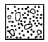
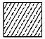
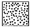
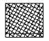
(정답률: 83%)
5. 주간선도로와 보조간선도로의 배치간격 기준은? (단, 시군의 규모, 지형조건, 토지이용계획, 인구밀도 등은 감안하지 않는다.)
- 1000m 내외
- 750m 내외
- 500m 내외
- 250m 내외
(정답률: 68%)
6. 조경설계기준상의 경관석 놓기 방법으로 가장 거리가 먼 것은?
- 돌을 묻는 깊이는 경관석 높이의 1/3 이상이 지표선 아래로 묻히도록 한다.
- 5석 배치하는 경우에는 삼재미의 원리 외에 음양 또는 오행의 원리를 적용하여 각각의 돌에 의미를 부여한다.
- 2석을 조합하는 경우에는 삼재미(천지인)의 원리를 적용하여 중앙에 지, 좌우에 각각 천, 인을 배치한다.
- 4석조 이상의 조합은 1석조, 2석조, 3석조의 조합을 기준으로 조합한다.
(정답률: 79%)
7. 다음 중 시각적 선호도에 영향을 끼치는 요소가 아닌 것은?
- 식생, 물, 지형과 같은 물리적 변수
- 연령, 성별 등에 따른 개인적 변수
- 사람과 관련된 행태적 변수
- 환경에 함축된 의미로서 상징적 변수
(정답률: 65%)
8. 다음 중 '대지의 조경'에 관한 내용을 담고 있는 방법은?
- 자연공원법
- 건축법
- 도시공원 및 녹지 등에 관한 법률
- 경관법
(정답률: 76%)
9. 공원 및 녹지체계 구성 방식 중 녹지의 연결성과 접근성의 측면에서 바람직하다고 볼 수 있으나, 한정된 녹지가 넓은 면적에 분포하게 되어 녹지의 좁아지는 단점이 있는 것은?
- 대상형을 가로, 세로로 겹쳐 놓은 격자형
- 단지 내 녹지를 한곳으로 모으는 집중형
- 일정 폭의 녹지를 길게 조성하는 대상형
- 단지 내 녹지를 고르게 분포시키는 분산형
(정답률: 66%)
10. 자연공원 용도지구 계획 중 다음 지정요건에 해당하는 지구는?
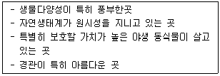
- 공원자연환경지구
- 공원자연보존지구
- 공원마을지구
- 공원문화유산지구
(정답률: 86%)
11. 체육시설업의 시설 기준 중 필수적으로 갖추어야 할 사항이 아닌 것은?
- 적정한 환기시설
- 수용인원에 적합한 탈의실과 급수시설
- 이용자 및 동행자들이 쉴 수 있는 관람석
- 수용인원에 적합한 주차장(등록 체육시설업) 및 화장실
(정답률: 79%)
12. K.Lynch가 주장한 조경계획의 경우 개념도 유형이 아닌 것은?
- 토지이용계획
- 동선계획
- 시각적 형태
- 종합 분석도
(정답률: 65%)
13. 중국 한(漢)나라 때 조경의 특징과 가장 관계가 먼 것은?
- 신선사상
- 상림원
- 곤명호
- 만세산
(정답률: 70%)
14. 대추나무를 가르키는 옛 이름은?
- 이(李)
- 내(奈)
- 백(伯)
- 조(棗)
(정답률: 79%)
15. 일본의 교토(京都)에 있는 용안사(龍安寺)의 고산수(枯山水)정원과 관련 있는 것은?
- 모래발고 학섬, 거북이섬의 석조(石槽), 곰솔과 향 나무의 배경식재
- 모래 바탕위에 5개, 2개, 3개, 2개, 3개 석조(石槽)의 배치
- 모래펄(銀沙難)과 향월대(向月臺)
- 모래발과 입석(立石) 그리고 무수폭포(無水瀑布)
(정답률: 74%)
16. 다음 중 스토(Stowe)가든을 설계한 사람과 관련없는 것은?
- 로스햄(Rousham)
- 하하(Ha-Ha)수법
- 취스윅가(Chiswisk House)
- 비큰히드 파크(Birkenhead Park)
(정답률: 81%)
17. 조선시대 주택공간에 있어 주작(朱雀)에 해당되어 남쪽에 흔히 만들어진 대표적 정원 시설은?
- 연못
- 정자
- 탑
- 괴석
(정답률: 78%)
18. 원지(苑地)에 물을 넣는 방법으로 입수부에 도수조와 인공폭포를 조성한 유적(遺蹟)은?
- 경복궁의 향원지(香遠亭)
- 신라의 안압지(雁鴨池)
- 선교장의 활래정(活來亭)
- 수원성의 용연(龍淵)
(정답률: 77%)
19. 20세기 후반 포스트모더니즘 시대에 나타난 도시경관의 특징이라 할 수 없는 것은?
- 기능적이고 경제적인 경관
- 보행중심의 경관
- 환경 친화적인 경관
- 개성과 친근감 있는 경관
(정답률: 67%)
20. 다음 중 아미산(峨嵋山) 조경 유적은 어느 곳에 있는가?
- 경주 안압지(雁鴨池)
- 경복궁 교태전(交泰殿) 후원
- 창덕궁 대조전(大造殿) 후원
- 경복궁 건청궁(乾淸宮) 후원
(정답률: 88%)
2과목: 조경식재
21. 인공지반 위에 식재를 할 경우 아래층부터 지반구성 순서로 알맞은 것은?
- 지하배수관 → 자갈 → 부직포 → 인공토양
- 자갈 → 부직포 → 지하 배수관 → 인공토양
- 부직포 → 지하배수관 → 자갈 → 인공토양
- 지하배수관 → 자갈 → 인공토양 → 부직포
(정답률: 80%)
22. 다음 중 방화용 수목의 요건으로 가장 부적합한 것은?
- 잎이 두껍고 함수량이 많은 수목
- 넓은 잎을 가진 상록서 수목
- 가시나무류, 은행나무, 아왜나무
- 지하고가 높은 수목
(정답률: 80%)
23. 다음 잎의 수가 다른 한 종은?
- Pinus Koraiensis Siebold & Zucc.
- Pinus bungeana Zucc. ex Endl.
- Pinus parviflora Siebold & Zucc.
- Pinus strobus L.
(정답률: 52%)
24. 다음 중 뿌리를 조개분 형태로 떠야 가장 효과적인 수종은?
- Quercus myrsinaefolia Blume.
- picea abies H. Karst.
- Larix kaempferi Carriere
- Salix chaenomeloides Kimura var. chaenomeloides
(정답률: 47%)
25. 식물 명명의 기본원칙에 해당되지 않은 것은?
- 분류군의 학명은 선취권에 따른다.
- 학명은 라틴어화하여 표기한다.
- 식물의 학명은 동물의 학명과 관계가 있다.
- 분류군의 학명은 표본의 명명기본이 된다.
(정답률: 90%)
26. 식물의 주요기관 중 잎은 단엽(單葉)과 복엽(複葉)으로 분류된다. 다음 중 단엽인 수종은?
- 복자기
- 등
- 쉬나무
- 팔손이
(정답률: 73%)
27. 고속도로에서의 식재기능으로서 적합하지 않은 것은?
- 지표식재
- 시선유도식재
- 차광식재
- 가로수식재
(정답률: 70%)
28. 우리나라에서 자생하는 참나무류는 성상에 따라 크게 2가지로 구분할 수 있다. 다음 중 성상이 다른 수종은?
- Quercus aliena
- Quercus acuta
- Quercus dentata
- Quercus serrata
(정답률: 52%)
29. 식물들은 토양산도(土壤酸度)에 따라 생육상태가 차이가 있다. 다음중 산성토에 가장 강한 것은?
- Rhododendron schippenbachii Maxim.
- Fagus engleriana Seemen ez Diels
- Acer Palmatum Thunb.
- Buxus Koreana Nakai ex Chung & al.
(정답률: 51%)
30. 선식재(線植栽)에 적당하며, 경계ㆍ시선유도 기능을 발휘하고, 전정 및 맹아력이 강한 수종으로만 구성된 것은?
- 소나무, 개비자나무
- 회양목, 서양측백
- 단풍나무, 백합나무
- 모과나무, 자귀나무
(정답률: 84%)
31. 수관폭(樹冠幅)에 대한 설명으로 옳지 않은 것은?
- 타원형 수관폭은 최대층의 수관축을 중심으로 한 최단폭과 최장폭을 평균한 것을 택한다.
- 건설공사표준품셈에 의거하여 식재시 규격표시는 W로 한다.
- 도장지는 길이 1m 이상의 것만 제외시킨다.
- 수평으로 생장하는 조형된 수관의 경우에는 수관폭의 최장폭을 수관길이로 사용한다.
(정답률: 79%)
32. 지접의 종류 중 다음 그림과 같은 접목 방법은?
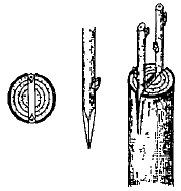
- 설접(舌接)
- 절접(切接)
- 할접(割接)
- 안접(鞍接)
(정답률: 78%)
33. 다음 설명에 해당하는 수종은?
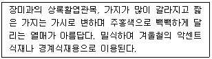
- Pyracantha angustifolia
- Malus sieboldii
- Prunus tomentosa
- Eriobotrya japonica
(정답률: 61%)
34. 다음 중 학명상에 한국이 원산지라는 의미가 담겨있는 수종이 아닌 것은?
- 구상나무
- 개나리
- 잣나무
- 느티나무
(정답률: 81%)
35. 다음 설명에 적합한 수종은?
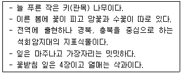
- Buxus Koreana Nakai ex Chung & al.
- Euonymus Japonicus Thunb.
- Ilex crenata Thunb. var. crenata
- Thuja orientalis L.
(정답률: 72%)
36. 다음 수목의 식재환경 중 음수(陰樹)가 생장할 수 있는 광량(光量)은 전수광량(全受光量)의 몇 % 내외인가?
- 5%
- 15%
- 25%
- 50%
(정답률: 63%)
37. 한국잔디의 설명으로 옳지 않은 것은?
- 발아가 잘 되지 않아서 주로 영양번식에 의존한다.
- 답압에 약하기 때문에 과도한 이용을 금해야 하며, 병충해에 약하여 자주 약제를 살포하여야 한다.
- 완전포복경으로 지하경이 왕성하게 뻗어 옆으로 기는 성질이 강하다.
- 난지형 잔디로 여름철에는 잘 자라지만, 겨울철이나 아주 추운 지방에서는 생육이 정지된다.
(정답률: 69%)
38. 녹지자연도(DGN : Degree of Green Naturality)의 녹지공간의 자연성 정도를 구분하는 지표로 가장 적합한 것은?
- 녹지공간의 자연성을 나타내는 지표로 1~11 등급으로 나누어 판정한 결과
- 녹지공간의 자연성을 나타내는 지표로 0~5 등급으로 나누어 판정한 결과
- 녹지공간의 자연성을 나타내는 지표로 0~10 등급으로 나누어 판정한 결과
- 녹지공간의 자연성을 나타내는 지표로 1~5 등급으로 나누어 판정한 결과
(정답률: 80%)
39. 다음 중 Quercus 속명이 아닌 식물은 무엇인가?
- 신갈나무
- 가시나무
- 밤나무
- 상수리나무
(정답률: 62%)
40. 선화후엽(先花後葉)식물 중 꽃은 황색이고, 열매는 검은색인 식물은?
- Lindera obtusiloba Blume
- Abeliophyllum distichum Nakai
- Prunus yedoensis Matsum.
- Phododendron mucronulatum Turcz. var. mucronulatum
(정답률: 52%)
3과목: 조경시공
41. 흙의 모세관 현상에 대한 설명으로 옳지 않은 것은?
- 간극비가 크면 모관상승고는 작아진다.
- 모세관 현상은 물의 표면장력 때문에 발생된다.
- 흙의 유효입경이 크면 모관상승고는 커진다.
- 모관상승 영역에서 간극수압은 부압, 즉 (-)압력이 발생된다.
(정답률: 55%)
42. 목재의 강도에 영향을 끼치는 인자로 거리가 먼 것은?
- 함수율
- 조직학적 성질
- 비중
- 수축과 팽창량
(정답률: 51%)
43. 수준측량이 야장기입법이 아닌 것은?
- 고차식
- 기고식
- 승강식
- 종단식
(정답률: 61%)
44. 다음 중 설계서의 단위 및 소수의 표준 중 옳게 적용되지 않은 것은? (단, 건설공사표준품셈의 단위수량에 한정한다.)
- 토적(체적) : 56.78m3
- 공사폭원 : 23.45m
- 모르타르 : 12.35m3
- 조약돌 : 8.51m3
(정답률: 63%)
45. 다음의 공사입찰 방법 중 가장 공개적이고 공사수주 희망자에게 기회를 균등하게 줄 수 있으며, 경제성이 있는 입찰방법은?
- 수의계약
- 일반경쟁입찰
- 제한적 평균가 낙찰제
- 설계 ㆍ 시공일괄입찰
(정답률: 91%)
46. 수준측량의 관측값으로부터 표고계산을 한 결과이다. 각 측점의 표고 중 틀리게 계산된 측점은? (단, 측점 No.1의 표고는 10.000m 임)
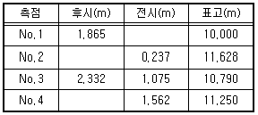
- No.1
- No.2
- No.3
- No.4
(정답률: 43%)
47. 다음 설명하는 조명등으로 가장 적합한 것은?
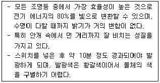
- 형광등
- 고압수은등
- 저압나트륨등
- 백열전구
(정답률: 75%)
48. 실제 두 점 사이의 거리 40m가 도상에서 2mm로서 표시될 때 축적은?
- 1 : 30000
- 1 : 25000
- 1 : 20000
- 1 : 10000
(정답률: 81%)
49. 다음 중 인장강도(kg/cm2)가 가장 큰 목재는?
- 소나무
- 느티나무
- 오동나무
- 낙엽송
(정답률: 40%)
50. 그림과 같은 보에서 점B에서 반력의 크기는 몇 kN인가?
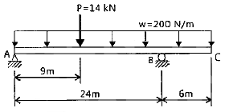
- 7
- 9
- 11
- 13
(정답률: 49%)
51. AE제를 사용하는 콘크리트의 특성에 대한 설명 중 옳지 않은 것은?
- 강도가 증가된다.
- 단위수량이 저감된다.
- 동결융해에 대한 저항성이 커진다.
- 워커빌리티가 좋아지고 재료의 분리가 감소된다.
(정답률: 58%)
52. 벽돌에 생기는 백화를 방지하기 위한 방법으로 가장 거리가 먼 것은?
- 벽돌면 상부에 빗물막이를 설치한다.
- 줄눈 모르타르에 석회를 넣어 바른다.
- 파라핀 도료를 발라 염류가 나오는 것을 방지한다.
- 10%이하의 흡수율을 가진 양질의 벽돌을 사용한다.
(정답률: 71%)
53. 공극을 함유하지 않은 목재실질(木材實質)의 비주을 무엇이라 하는가?
- 진비중
- 전건비중
- 용적밀도
- 생재비중
(정답률: 80%)
54. 규격은 표준형 벽돌로 1m2에 0.5B 벽돌을 쌓을 때 소요되는 벽돌의 양은 약 얼마인가? (단, 줄눈간격은 1cm이며, 반드시 할증률을 고려한다.)
- 69매
- 77매
- 92매
- 96매
(정답률: 71%)
55. 아래의 축척별 등고선 간격으로 옳지 않은 것은?
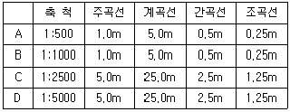
- A
- B
- C
- D
(정답률: 65%)
56. 일반적으로 콘크리트의 크리프 변형에 관한 설명으로 옳지 않은 것은?
- 시멘트량이 많을수록 크다.
- 부재의 건조 정도가 높을수록 크다.
- 재하시의 재령이 짧을수록 크다.
- 부재의 단면치수가 클수록 크다.
(정답률: 48%)
57. 다음 중 건설공사표준품셈의 적산 적용기준으로 옳지 않은 것은?
- 붉은 벽돌의 할증률은 3%이다.
- 모따기의 체적은 구조물의 수량에서 공제한다.
- 설계서의 총액은 1,000원 이하는 버린다.
- 수량의 계산은 지정 소수의 이하 1위까지 구하고, 끝 수는 4사5입한다.
(정답률: 55%)
58. 다음 설명의 ( )안에 적합한 수치는?
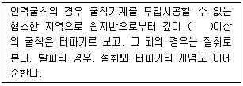
- 10cm
- 15cm
- 20cm
- 30cm
(정답률: 63%)
59. 토층단면의 각 층위를 지표면으로부터 정확하게 나열한 것은?
- 용탈층→집적층→모재층→모암→유기물층
- 집적층→모암→모재층→유기물층→용탈층
- 모재층→유기물층→집적층→용탈층→모암
- 유기물층→용탈층→집적층→모재층→모암
(정답률: 72%)
60. 힘과 모멘트에 관한 설명 중 옳지 않은 것은?
- 모멘트는 거리에 반비례한다.
- 힘의 1점에 대한 회전 능률을 모멘트라 부른다.
- 힘은 작용점, 방향, 크기로 나타낸다.
- 크기가 같고 작용선이 평행하며, 방향이 반대인 한쌍의 힘을 우력이라 한다.
(정답률: 80%)
4과목: 조경관리
61. 다음 중 시설물의 설치하자에 해당되는 것은?
- 유리조각을 방치하여 어린이가 손을 다쳤다.
- 그네에서 떨어지거나 미끄럼틀에서 거꾸로 떨어졌다.
- 시설이 노후회되어 파손부위에 의해 상처를 입었다.
- 그네에서 뛰어내리는 곳에 벤치가 배치되어 어린이들이 충돌하였다.
(정답률: 90%)
62. 다음 중 토양서식균으로 볼 수 없는 것은?
- Botrytis
- Pythium
- Fusarium
- Rhizoctonia
(정답률: 53%)
63. 병원체의 활동과 병의 진행을 알려주는 일련의 과정을 무엇이라 하는가?
- 병환
- 병삼각형
- 코흐의 원칙
- 미생물병원설
(정답률: 79%)
64. 배수시설의 점검시 유의해야 할 사항과 가장 관련이 없는 것은?
- 노면 및 갓길 부분의 배수시설 상황
- 지하 배수시설 유출구의 물 빠진 상태
- 주변의 유입수, 토사의 유출 상황
- 집수구, 맨홀, 노즐 분사구의 상태
(정답률: 58%)
65. 중량법(重量法, gravimetry)에 의한 토양수분측정 과정에서 젖은 토양 시료의 중량이 50g, 110℃ 건조기에서 건조시킨 토양의 중량이 40g이면 이 토양의 무게 기준 수분함량은?
- 5%
- 10%
- 25%
- 50%
(정답률: 64%)
66. 토목공사로 인한 절토(切土, soil cut) 지역에서 수목을 보호하기 위해 실시되는 기법에 해당되는 것은?
- 수직 유공관 깔기
- 수평 유공관 놓기
- 마른우물(dry well) 파기
- 석축(retaininr wall) 쌓기
(정답률: 60%)
67. 종내경합(Intra-specific competition)이란?
- 작물과 잡초간 경합
- 동일 종내의 잡초간 경합
- 여러 작물과 한 잡초간 경합
- 서로 다른 잡초 초종간 경합
(정답률: 84%)
68. 조경현장에서의 재해는 그 발생 원인에 따라 여러가지(인적원인, 물적원인 등)로 구분할 수 있다. 다음중 인적 원인에 해당하는 것은?
- 방호설비에 결함이 있었다.
- 작업장의 조명이 부적절하였다.
- 작업자와 연락이 불충분하였다.
- 작업장 주위가 정리정돈 되어 있지 않았다.
(정답률: 85%)
69. 철재 및 석재 벤치의 관리에 관한 설명으로 옳지 않은 것은?
- 철재부위에 녹이 생긴 경우 사포로 닦아낸 후 재도장 한다.
- 염분과 이산화탄소 발생이 심한 지역에 철재 부위의 녹 발생이 특히 심하다.
- 석재의 균열부 보수에는 표면 실링공법과 고무 압식주입방법이 쓰인다.
- 석재 파손부위를 접착시킬 경우 약 24시간 이상 고정시켜 접착을 도모한다.
(정답률: 45%)
70. 전정의 목적 중 생장을 억제하기 위한 전정에 해당되지 않는 것은?
- 산울타리의 다듬기 작업
- 소나무의 새순을 치는 작업
- 상록활엽수의 잎사귀를 따는 작업
- 감나무의 가지치기 작업
(정답률: 64%)
71. 소나무 잎떨림병균이 월동하는 곳은?
- 주변의 잡초
- 중간기주의 잎
- 소나무 뿌리와 줄기
- 땅 위에 떨어진 병든 잎
(정답률: 78%)
72. 다음 중 시설물의 안전관리에 관한 특별법상 안전점검의 종류가 아닌 것은?
- 정기점검
- 긴급점검
- 정밀점검
- 임시점검
(정답률: 68%)
73. 4%의 2, 4-D 농도는 몇 ppm인가?
- 40
- 400
- 4000
- 40000
(정답률: 60%)
74. 다음 중 유지관리 작업이 가장 용이한 포장공법은?
- 시멘트콘크리트포장
- 아스팔트포장
- 블록포장
- 타일포장
(정답률: 73%)
75. 관리유형에 따라 레크레이션이용의 강도와 특성의 조절을 위한 관리기법 중 직접적 이용제한의 방법은?
- 이용유도
- 시설개발
- 구역별 이용
- 이용자에게 정보 제공
(정답률: 64%)
76. 다음은 어떤 잡초에 대한 설명인가?
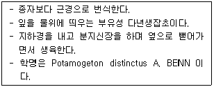
- 올미
- 벗풀
- 가래
- 너도방동사지
(정답률: 52%)
77. 다음 조경시설물 중 보수 사이클이 가장 짧은 것은?
- 분수의 전기, 기계등의 조정점검
- 벤치의 도장
- 시계탑의 분해점검
- 분수의 물 교체, 청소낙엽 제거
(정답률: 73%)
78. 최근 공해로 인한 수목의 피해가 급증하고 있다. 대기오염의 피해로서 황산화물(SOx)의 피해가 아닌 것은?
- 소량의 이산화황은 수목생육에 도움이 된다.
- 급성피해는 고농도의 아황산을 단시간 내에 흡수하는 것을 말한다.
- 만성피해는 낮은 농도의 이산화황이 장기간 흡수되는 것을 말한다.
- 엽록소의 파괴를 가져와 세포가 붕괴되어 심한 경우 고사한다.
(정답률: 76%)
79. 다음 중 소나무류에 피해를 주는 솔잎혹파리의 천적이 아닌 것은?
- 혹파리등뿔먹좀벌
- 검정무늬납작맵시벌
- 혹파리반뿔먹좀벌
- 혹파리살이먹좀벌
(정답률: 83%)
80. 다음 중 잎을 주로 섭식하는 식엽성(食葉性) 해충이 아닌 것은?
- 호두나무잎벌레
- 어스렝이나방
- 밤나무혹벌
- 잣나무넓적잎벌
(정답률: 69%)